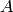
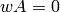
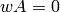
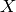
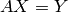
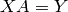
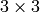
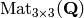
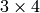
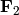

Navigation
- index
- next |
- previous |
- Sage Tutorial v4.3 »
- 导览 »

Sage提供线性代数的标准构造，如矩阵的特征多项式，梯形格式，迹，分解等。
构造矩阵和矩阵的乘法都是很容易的，也是很自然的：
sage: A = Matrix([[1,2,3],[3,2,1],[1,1,1]])
sage: w = vector([1,1,-4])
sage: w*A
(0, 0, 0)
sage: A*w
(-9, 1, -2)
sage: kernel(A)
Free module of degree 3 and rank 1 over Integer Ring
Echelon basis matrix:
[ 1 1 -4]
注意，在Sage中，矩阵  的核（kernel）是“左核”（left kernel），
即在向量空间中,  满足 .
满足 .
解矩阵方程也很容易，使用方法 solve_right. 执行 A.solve_right(Y) 返回一个矩阵（或向量）  满足 :
sage: Y = vector([0, -4, -1])
sage: X = A.solve_right(Y)
sage: X
(-2, 1, 0)
sage: A * X # checking our answer...
(0, -4, -1)
反斜杠 \ 可以代替 solve_right; 用 A \ Y 代替 A.solve_right(Y).
sage: A \ Y
(-2, 1, 0)
如果无解，Sage返回一个错误：
sage: A.solve_right(w)
...
ValueError: matrix equation has no solutions
类似的，使用 A.solve_left(Y) 求解满足  的 .
Sage还可以计算特征值和特征向量:
sage: A = matrix([[0, 4], [-1, 0]])
sage: A.eigenvalues ()
[-2*I, 2*I]
sage: B = matrix([[1, 3], [3, 1]])
sage: B.eigenvectors_left()
[(4, [
(1, 1)
], 1), (-2, [
(1, -1)
], 1)]
(eigenvectors_left 的输出是三元组的列表：(特征值，特征向量， 重数)。) 在 QQ 或 RR 上的特征值和特征向量也可以用 Maxima计算(参见: Maxima)。
基本的环 中提到，矩阵所在的环影响它的性质。 下面 matrix 命令中的第一个参数告诉Sage这个矩阵是整数环(ZZ)上的， 有理数环(QQ)上的，还是实数环(RR)上的:
sage: AZ = matrix(ZZ, [[2,0], [0,1]])
sage: AQ = matrix(QQ, [[2,0], [0,1]])
sage: AR = matrix(RR, [[2,0], [0,1]])
sage: AZ.echelon_form()
[2 0]
[0 1]
sage: AQ.echelon_form()
[1 0]
[0 1]
sage: AR.echelon_form()
[ 1.00000000000000 0.000000000000000]
[0.000000000000000 1.00000000000000]
我们建立由  的有理数矩阵构成的空间 :
sage: M = MatrixSpace(QQ,3)
sage: M
Full MatrixSpace of 3 by 3 dense matrices over Rational Field
(如果要指定  矩阵组成的空间，使用 MatrixSpace(QQ,3,4). 如果省略列数，则默认的等于行数， MatrixSpace(QQ,3) 等价于 MatrixSpace(QQ,3,3).) Sage将矩阵空间的基保存为一个列表。
sage: B = M.basis()
sage: len(B)
9
sage: B[1]
[0 1 0]
[0 0 0]
[0 0 0]
新建一个矩阵作为 M 的元素。
sage: A = M(range(9)); A
[0 1 2]
[3 4 5]
[6 7 8]
然后我们计算它约简后的阶梯矩阵形式以及核。
sage: A.echelon_form()
[ 1 0 -1]
[ 0 1 2]
[ 0 0 0]
sage: A.kernel()
Vector space of degree 3 and dimension 1 over Rational Field
Basis matrix:
[ 1 -2 1]
下面我们展示定义在有限域上的矩阵的运算：
sage: M = MatrixSpace(GF(2),4,8)
sage: A = M([1,1,0,0, 1,1,1,1, 0,1,0,0, 1,0,1,1,
... 0,0,1,0, 1,1,0,1, 0,0,1,1, 1,1,1,0])
sage: A
[1 1 0 0 1 1 1 1]
[0 1 0 0 1 0 1 1]
[0 0 1 0 1 1 0 1]
[0 0 1 1 1 1 1 0]
sage: rows = A.rows()
sage: A.columns()
[(1, 0, 0, 0), (1, 1, 0, 0), (0, 0, 1, 1), (0, 0, 0, 1),
(1, 1, 1, 1), (1, 0, 1, 1), (1, 1, 0, 1), (1, 1, 1, 0)]
sage: rows
[(1, 1, 0, 0, 1, 1, 1, 1), (0, 1, 0, 0, 1, 0, 1, 1),
(0, 0, 1, 0, 1, 1, 0, 1), (0, 0, 1, 1, 1, 1, 1, 0)]
我们构造一个由上面的行张成的  的子空间。
sage: V = VectorSpace(GF(2),8)
sage: S = V.subspace(rows)
sage: S
Vector space of degree 8 and dimension 4 over Finite Field of size 2
Basis matrix:
[1 0 0 0 0 1 0 0]
[0 1 0 0 1 0 1 1]
[0 0 1 0 1 1 0 1]
[0 0 0 1 0 0 1 1]
sage: A.echelon_form()
[1 0 0 0 0 1 0 0]
[0 1 0 0 1 0 1 1]
[0 0 1 0 1 1 0 1]
[0 0 0 1 0 0 1 1]
 的基是由 的行梯形矩阵形式中的非零元的行得到的。
的基是由 的行梯形矩阵形式中的非零元的行得到的。
Sage支持在PID上的稀疏线性代数。
sage: M = MatrixSpace(QQ, 100, sparse=True)
sage: A = M.random_element(density = 0.05)
sage: E = A.echelon_form()
Sage中的多模算法对于方阵效果比较好（但是对于非方阵效果不怎么好）：
sage: M = MatrixSpace(QQ, 50, 100, sparse=True)
sage: A = M.random_element(density = 0.05)
sage: E = A.echelon_form()
sage: M = MatrixSpace(GF(2), 20, 40, sparse=True)
sage: A = M.random_element()
sage: E = A.echelon_form()
注意，Python是区分大小写的：
sage: M = MatrixSpace(QQ, 10,10, Sparse=True)
...
TypeError: MatrixSpace() got an unexpected keyword argument 'Sparse'